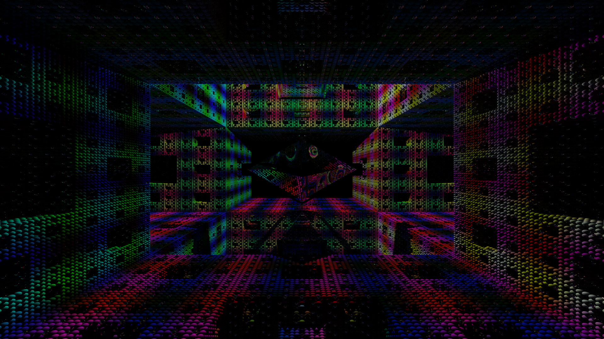
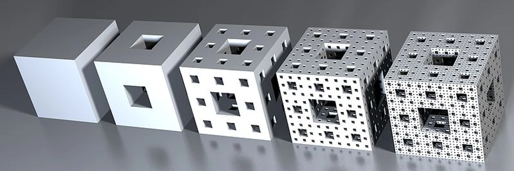
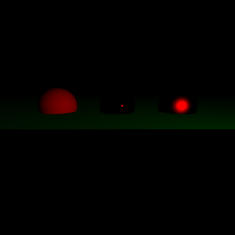
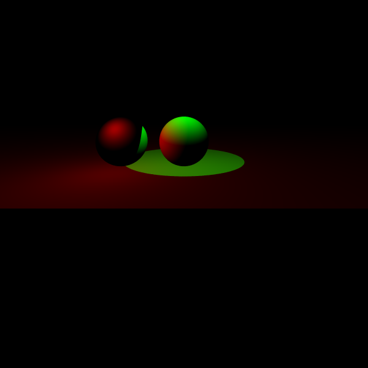
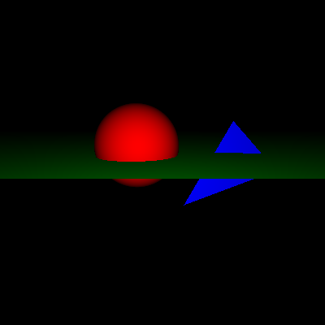
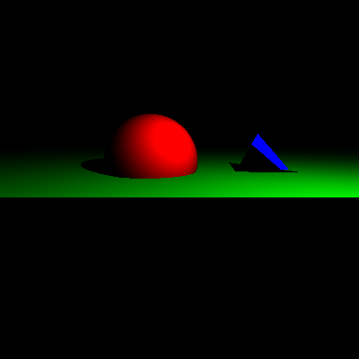
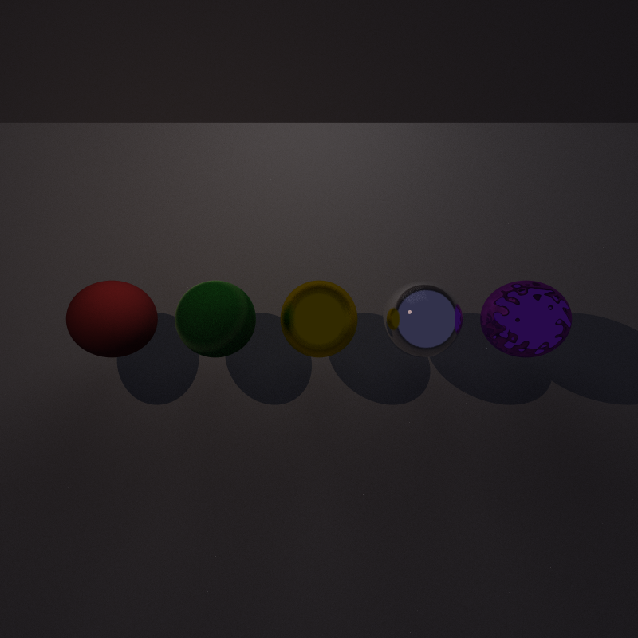

A high-performance raytracing engine capable of rendering complex procedural fractals with millions of primitives in seconds.

A procedural masterpiece constructed through recursive spatial subdivision and geometric pruning.

The scene follows the Menger Sponge fractal pattern, constructed by recursively dividing space into 3x3x3 grids and removing the center and face-center cells. At Depth 5, this results in over 3.2 million unique spheres, each rendered with dynamic psychedelic shading.
In our implementation, at the heart of the fractal is a reflective Octahedral Diamond—a complex geometry made out of 64 triangles.
The lighting environment is driven by a dual-system approach: a high-intensity white Point Light positioned near the center to catch specular highlights, and a large Area Light overhead that provides soft, realistic shadows across the millions of primitives.
Our BVH implementation transforms an O(N) intersection problem into an O(log N) traversal.
| Resolution | Recursive Depth | Primitive Count | Naive Render (Est.) | BVH Accelerated |
|---|---|---|---|---|
| Low (480x360) | 5 | 3,200,064 | 6.5 days | 82.736 s |
| High (1920x1080) | 5 | 3,200,064 | 86.4 days | 17.4 mins |
* Naive unaccelerated rendering estimates based on single-threaded linear intersection testing.
A detailed look at the core raytracing capabilities implemented in the engine, from material modeling to advanced sampling techniques.

This showcase demonstrates our robust BRDF system, featuring materials (from left to right): Diffuse (Lambertian BRDF), Mirror (Perfect Specular BRDF), Metal (Glossy BRDF).

Our engine supports different types of light sources. In this particular scene the spheres are white, and there is a red point light off to the left, and a green spotlight pointing down on the center from above.


By implementing a dedicated Shadow Tracer, we move from flat lighting to realistic occlusion. The system shoots secondary shadow rays from each hit point toward the light sources, determining if any geometry blocks the path, which results in accurate, hard shadows that ground objects in the scene.
To eliminate "jaggies" on geometric edges, we implemented a Jittered Multi-Sampling system. Instead of shooting one ray through the center of a pixel, we subdivide each pixel and shoot multiple rays at randomized positions within the sub-pixels, averaging the result for silky smooth edges.

Our engine features a full Path Tracer implementation, enabling global illumination effects like soft shadows, indirect lighting, and complex light transport. The showcase above highlights various material models (left to right): Diffuse, SpecularDiffuse, Metal, Mirror, and Wavy Mirror.